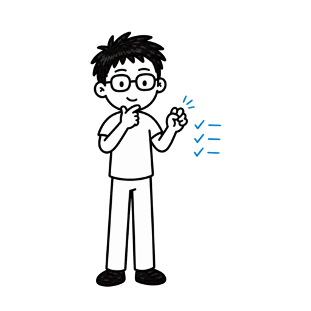
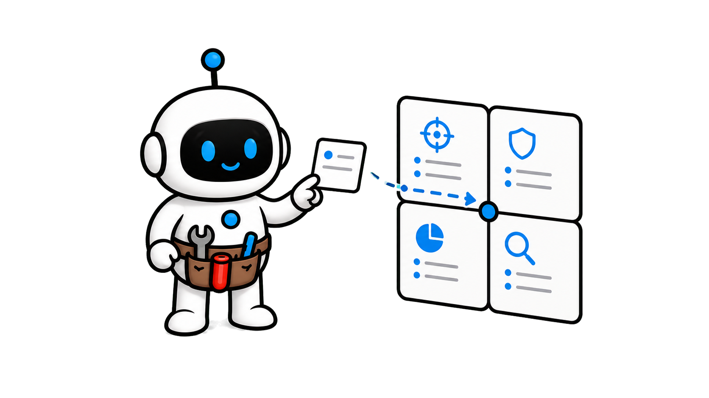
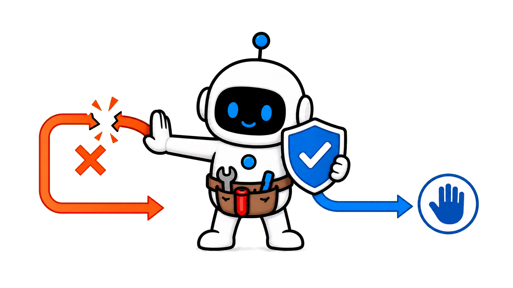

专业度为什么放大 Agent？


专业度为什么放大 Agent？
专业度为什么放大 Agent？
四十万次交互会话

Anthropic 四十万次交互会话
四十万次交互会话
四十万次交互会话
懂问题，Agent 才能走得更远

懂问题，Agent 才能走得更远
责任分工卡

责任分工卡
高价值方法

先收藏 留下一张责任分工卡让专业度放大 Agent
留下一张责任分工卡让专业度放大 Agent
留下一张责任分工卡让专业度放大 Agent
第 2 章
先看真实分工
先看真实分工


规划：做什么与怎样算完成
规划：做什么与怎样算完成


人做约七成规划决策
人做约七成规划决策
Agent 承担约八成执行决策

≠

Agent 承担约八成执行决策
典型会话约四轮往返

典型会话约四轮往返
每条提示约十个动作


每条提示约十个动作
决定必须有所有者

决定必须有所有者
1.规划与执行分开
2.执行要可验证
3.检查点保持纠偏
1.规划与执行分开
2.执行要可验证
3.检查点保持纠偏
1.规划与执行分开
2.执行要可验证
3.检查点保持纠偏
第 3 章
专业度怎样放大 Agent
专业度放大行动链

专业度针对当前任务


专业度针对当前任务
会计也能是任务专家


会计也能是任务专家
会计也能是任务专家
新手：约五个动作
新手：约五个动作
专家：约十二个动作
专家：约十二个动作
每级增加动作与输出
≠

每级增加动作与输出
约束换来安全推进
约束换来安全推进
1.专业度不是职位
2.明确约束延长行动链
3.证据比字数重要
1.专业度不是职位
2.明确约束延长行动链
3.证据比字数重要
1.专业度不是职位
2.明确约束延长行动链
3.证据比字数重要
第 4 章
按风险划分责任
按风险划分责任

可逆执行交给 Agent

≠
可逆执行交给 Agent
目标与价值由人负责
目标与价值由人负责
陌生环境先勘察
陌生环境先勘察
异常出现就降级自主
异常出现就降级自主
异常出现就降级自主
比例不是行业定律
比例不是行业定律

写决定与升级条件
写决定与升级条件
1.看可逆性与不确定性
2.高代价取舍留给人
3.失败时及时接管
1.看可逆性与不确定性
2.高代价取舍留给人
3.失败时及时接管
1.看可逆性与不确定性
2.高代价取舍留给人
3.失败时及时接管
第 5 章
把专业度变成责任动作
把专业度变成动作

任务定义要可检查
任务定义要可检查
验证要求提前写

验证要求提前写
关键节点由人纠偏

关键节点由人纠偏
验证成功率随专业度上升
验证成功率随专业度上升
主要收益来自新手到中级
主要收益来自新手到中级
恢复路径同样重要
恢复路径同样重要
1.知识写成约束与证据
2.流畅不等于正确
3.为故障预留接管路径
1.知识写成约束与证据
2.流畅不等于正确
3.为故障预留接管路径
1.知识写成约束与证据
2.流畅不等于正确
3.为故障预留接管路径
第 6 章
使用责任分工卡
使用责任分工卡

一：规划所有者
一：规划所有者
二：执行授权
二：执行授权
二：执行授权
三：验证证据
三：验证证据
四：失败所有者
四：失败所有者
按责任顺序填写
≠
按责任顺序填写
本期工作流推导
本期工作流推导
1.先指定责任人
2.再开放执行授权
3.证据决定完成
1.先指定责任人
2.再开放执行授权
3.证据决定完成
1.先指定责任人
2.再开放执行授权
3.证据决定完成
专业度保留责任

专业度保留责任
研究边界必须保留
≠
研究边界必须保留
启动前先写四栏
启动前先写四栏
Anthropic 在二零二六年六月发布了一项隐私保护分析，
覆盖约四十万次 Claude Code 交互会话和约二十三万五千名用户，
观察期从二零二五年十月到二零二六年四月。
研究看到的不是专家把每个动作抓得更紧。
相反，领域理解越清楚，Agent 每条指令后的行动链越长，
遇到错误时也更容易被带回正确方向。
这期会把发现整理成一张责任分工卡：规划由谁定，执行交给谁，
验证看什么，失败时谁接管。
它是本期的实践推导，不是 Anthropic 官方模板。
视频全程干货高价值，让你成为更擅长使用 AI 的人，
内容较长，点点关注收藏不迷路。
第一步先看真实分工，而不是把自主程度想成一个开或关的按钮。
研究把决策分成两类。
规划回答做什么、选哪条路线和怎样算完成；执行回答改哪些文件、
写什么代码和运行哪些命令。
在典型会话里，人平均做出约百分之七十的规划决策，
却只做出约百分之二十的执行决策。
换句话说，常见模式是人决定要建什么，
Agent 决定具体怎样建。
这并不等于人只写一句需求就离场。
典型会话大约有四轮往返，每轮都可以重新校正方向。
每条用户提示平均会触发大约十个 Agent 动作，
有些会话远高于这个数字，
所以每个检查点都可能承载很长的行动链。
真正要写清的不是允许 Agent 做几步，
而是哪些决定必须留给懂问题的人。
本章小节。
第一，把做什么和怎样做分开记录。
第二，让 Agent 承担可验证的执行链，
而不是替人定义目标。
第三，用阶段检查点保持方向可纠正。
第二步要理解为什么专业度会放大 Agent，
而不是简单压缩 Agent 的空间。
研究按任务把用户表现出的专业度分成五级。
它看的是指令是否精确、要求怎样验证，以及谁在纠正谁，
不是职位或笼统能力。
同一个人换到陌生领域可能是新手；不会写代码的会计，
只要能说清月末对账规则并发现边界错误，也可能是该任务的专家。
典型新手会话中，
每条提示大约触发五个 Agent 动作和约六百词输出。
典型专家会话中，行动链超过两倍，约十二个动作；
输出约三千二百词，是新手会话的五倍左右。
在控制工作模式、任务价值、月份、职业和模型家族后，
专业度每提高一级，动作数仍增加约百分之九，
输出增加约百分之十三。
这不是说文字越多越好，
而是清晰约束让 Agent 能在一次交接中安全推进更多可检查工作。
本章小节。
第一，专业度是针对当前任务的理解。
第二，明确约束会延长 Agent 的有效行动链。
第三，用可验证产物衡量工作，不用输出长度代替质量。
第三步是按能力与不确定性分工，而不是按人和机器简单切一刀。
稳定、可逆、规则清楚的执行可以成批交给 Agent，
例如读取文件、机械修改、运行检查和汇总证据。
目标定义、价值冲突、隐含约束和高代价取舍要由人负责，
因为这些决定依赖领域背景和后果判断。
当规则虽清楚但环境陌生时，
可以让 Agent 先勘察并列出假设，人在执行前确认边界。
当执行出现反复失败、证据互相冲突或影响范围扩大时，
自动化程度应该下降，责任重新回到人。
研究中的典型分工给出方向，
但它来自 Claude Code 的交互会话，
不是所有行业的固定比例。
所以责任卡要写决定类型和升级条件，
而不是照抄百分之七十或百分之二十。
本章小节。
第一，按可逆性和不确定性决定委派深度。
第二，把目标、价值和高代价取舍留给人。
第三，预先写明失败与冲突何时触发接管。
第四步是把专业度转成可观察的责任动作。
清晰的任务定义要包含对象、约束、完成证据和明确禁区，
不能只给一个模糊愿望。
验证要求要在执行前写下，例如必须通过哪些测试、
比对哪些原始数据、保留哪些审计痕迹。
专业用户会在关键节点纠正 Agent，
因为他们能识别看似顺畅却偏离业务规则的结果。
研究的严格验证成功率从新手会话的百分之十五，
上升到中级及以上会话的大约百分之二十八到三十三。
大部分提升发生在新手到中级之间，
说明工作性理解已经能带来很大收益，深度精通的边际增益较小。
遇到麻烦时，专家会话转成验证成功的比例也更高；
这提醒我们要设计恢复路径，而不是只设计顺利路径。
本章小节。
第一，把专业知识写成约束和完成证据。
第二，在关键节点主动纠偏，不把流畅当正确。
第三，为失败后的诊断、缩小范围和人工接管留出路径。
第五步，把这些原则落到一张四栏责任分工卡。
第一栏是规划所有者。
写出谁定义目标、优先级、允许的取舍和完成标准。
第二栏是执行授权。
列出 Agent 可以自主读取、修改、运行和组合的动作，
以及明确禁止的动作。
第三栏是验证证据。
每个关键结果都绑定测试、原始来源、差异检查或可复现命令。
第四栏是失败所有者。
写清连续失败、证据冲突、范围扩大或不可逆动作出现时由谁接管。
使用时先填规划所有者和失败所有者，再开放执行授权，
最后逐项核对验证证据。
这张卡是基于研究分工与专业度信号整理出的工作流工具，
不代表研究已经验证了这张卡本身。
本章小节。
第一，先指定规划与失败责任人。
第二，再开放有边界的执行授权。
第三，用预先约定的证据决定是否完成。
总结一下，领域专家不是因为少让 Agent 做事而更有效，
而是因为他们更清楚目标、约束、证据和接管时机。
研究仍有边界：成功来自转录分类和可验证信号，
不等于真实世界结果；非交互式使用也没有纳入。
下次启动 AI Agent 前，先写四栏：规划所有者、
执行授权、验证证据、失败所有者。
关注 Tiny Agent，成为更擅长使用 AI 的人！
为什么懂业务
的人，能让
AI Agent
做得更多？


Tiny Agent
成为更擅长使用 AI 的人！